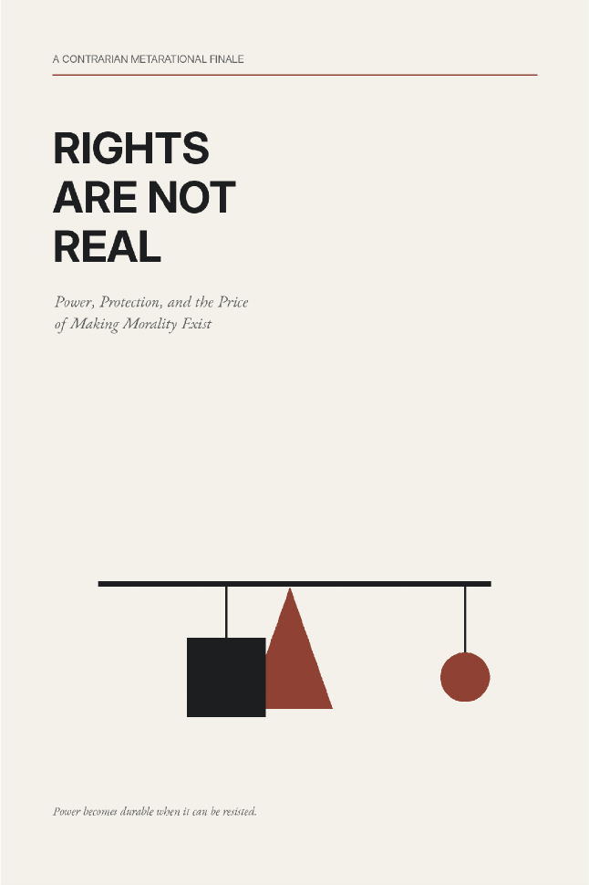

Power, Institutions & Society · Axiologic Research Editions
Rights Are Not Real
Power, Protection, and Why Morality Needs an Army
Take the unsettling sentence seriously, then follow its implications for culture, coercion, nonintervention, corruption, and the work of making moral claims effective.
Rights without teeth
Calling something a right does not itself create the capacity to enforce it. Courts, procedures, money, organized constituencies, public memory, and coercive restraint turn a moral judgment into a reliable protection. The book takes that dependence seriously without reducing morality to raw force.
The distinction helps explain why promises decay: a principle can remain widely affirmed while the people and institutions needed to invoke it lose time, access, credibility, or power.
There is no culture outside power
Nonintervention can preserve dignity and it can preserve domination; state action can protect and it can coerce. The book refuses these as ready-made camps. It asks who benefits, who pays, who can appeal, and who holds the means to contest a decision.
A right becomes real where a claim can alter what power is allowed to do.
Power against itself
The final question is institutional: can authority be organized so that it protects people from arbitrary authority, including its own? The book looks for plural centers, vigilant publics, meaningful challenge, and corrective mechanisms that make moral commitments durable without making them untouchable.